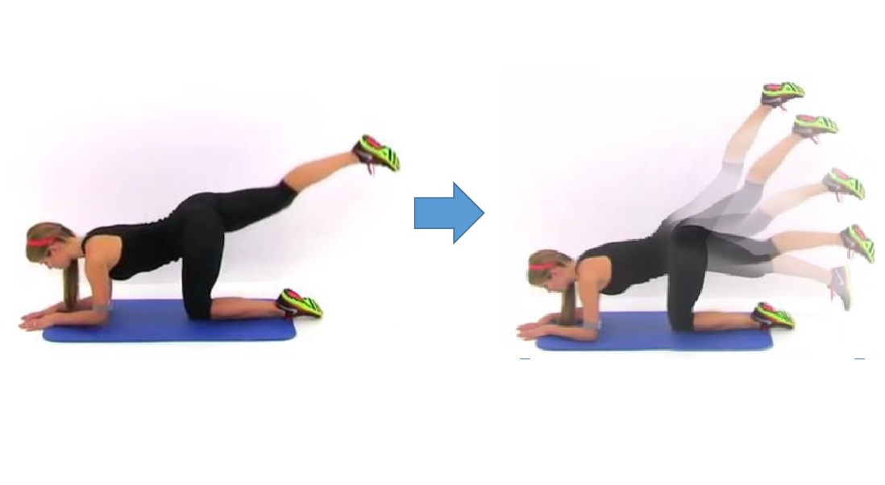

XUE, Tianfan
 |
XUE, Tianfan |

Biography
I started as an assistant professor at the Department of Information Engineering, the Chinese University of Hong Kong in Novermber of 2022. If you are excited about computational photography, computer vision, computer graphics, and machine learning, please contact for potential full-funded Ph.D., master, postdoc, R.A., and intern positions available.
I received my Ph.D. from MIT Computer Science and Artificial Intelligence Laboratory, under the supervision of William T. Freeman. Before that, I received my Master of Philosophy in the Information Engineering Department, The Chinese University of Hong Kong in 2011, under the supervised of Prof. Xiaoou Tang and Prof. Jianzhuang Liu. I also received my B.E. degree in the Computer Science and Technology Department from Tsinghua University, China, in 2009. Here is my Curriculum Vitae [PDF].Research Highlights
Selected Publications
 |
How to Train Neural Networks for Flare Removal |
 |
Defocus Map Estimation and Deblurring from a Single Dual-Pixel Image |
 |
Learned Dual-View Reflection Removal |
Joint Bilateral Learning for Real-time Universal Photorealistic Style Transfer Real-time Localized Photorealistic Video Style Transfer. |
|
 |
Handheld Mobile Photography in Very Low Light |
Multi-frame stereo matching with edges, planes, and superpixels, |
|
 |
Unprocessing Images for Learned Raw Denoising, |
Stereoscopic Dark Flash for Low-light Photography, |
|
 |
MoSculp: Interactive Visualization of Shape and Time, |
 |
Video Enhancement with Task-Oriented Flow, |
Pix3D: Dataset and Methods for Single-Image 3D Shape Modeling |
|
Best-Buddies Similarity - Robust Template Matching using Mutual Nearest Neighbors, |
|
MarrNet: 3D Shape Reconstruction via 2.5D Sketches |
|
|  | Visual Dynamics: Probabilistic Future Frame Synthesis via Cross Convolutional Networks |
 |
Learning a Probabilistic Latent Space of Object Shapes via 3D Generative-Adversarial Modeling |
 |
Single Image 3D Interpreter Network 3D Interpreter Networks for Viewer-Centered Wireframe Modeling International Journal of Computer Vision(IJCV), 2018. [arxiv-preprint] |
 |
A Computational Approach for Obstruction-Free Photography |
 |
The Aperture Problem for Refractive Motion |
Refraction Wiggles for Measuring Fluid Depth and Velocity from Video |
|
 |
Example-Based 3D Object Reconstruction from Line Drawings
|
 |
Symmetric Piecewise Planar Object Reconstruction from a Single Image 3D Modeling from a Single View of a Symmetric Object |
Object Cut: Complex 3D object reconstruction through line drawing separation |
|
Joint Example-based DepthMap Super-Resolution |
|
Fast Frame-rate Up-conversion of Depth Video via Video Coding |
|
|
* indicates equal contribution
|
{kind=link}
Education
Ph.D., Computer Sci., Massachusetts Institute of Technology, Aug. 2012 - Jul. 2017
Supervisor: Prof. William T. Freeman.
M.Phil., Information Eng., Chinese University of Hong Kong, Aug. 2009 - Jul. 2011
Supervisor: Prof. Xiaoou Tang
B. Eng., Computer Sci. & Tech, Tsinghua University, China, Aug. 2005 - Jul. 2009
Services
Conference Organizers: Computer Vision and Pattern Recognition 2020 web chair Winter Conference on Applications of Computer Vision 2023 area chair Computer Vision and Pattern Recognition 2023 area chair
Conference Reviewers: Computer Vision and Pattern Recognition (CVPR): 2016, 2017, 2018, 2020, 2021, 2022 European Conference on Computer Vision (ECCV): 2016, 2018, 2020, 2022, workshop on optical flow (2018) Pacific Graphics 2018 International Conference on Computer Vision (ICCV) 2017, 2019, 2021 SIGGRAPH 2018, 2021, 2022 SIGGRAPH Asia 2017, 2021, 2022 Neural Information Processing Systems (NeurIPS) 2016, 2021, 2022 International Symposium on Circuits & Systems (ISCAS) 2017
Journal Reviewers: IEEE Transactions on Pattern Analysis and Machine Intelligence (T-PAMI) IEEE Transactions on Systems, Man, and Cybernetics IEEE Transactions on Computational Imaging (TCI) IEEE Transactions on Multimedia (TMM) IEEE Transactions on Image Processing (TIP) IEEE Transactions on Circuits and Systems for Video Technology (TCSVT) Artificial Intelligence Image and Vision Computing (IVC) Cognitive Computation Computers and Electrical Engineering Machine Vision and Applications IEEE Computer Graphics and Applications Journal of the Optical Society of America Pattern Recognition Letter
MISC
Previous Labmates in MIT CSAIL: Katie Bouman, Hossein Mobahi, Michael Rubinstein, Tali Dekel, Donglai Wei, Jiajun Wu, Xiuming Zhang